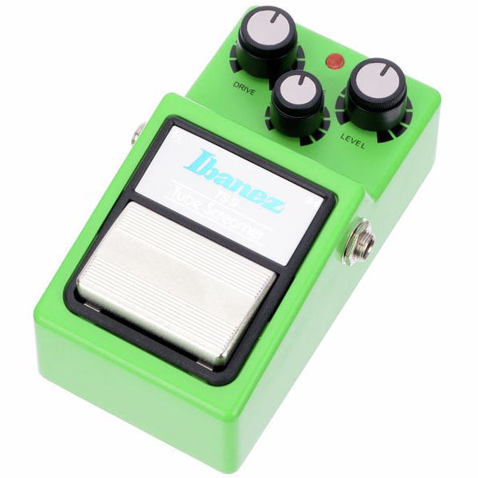
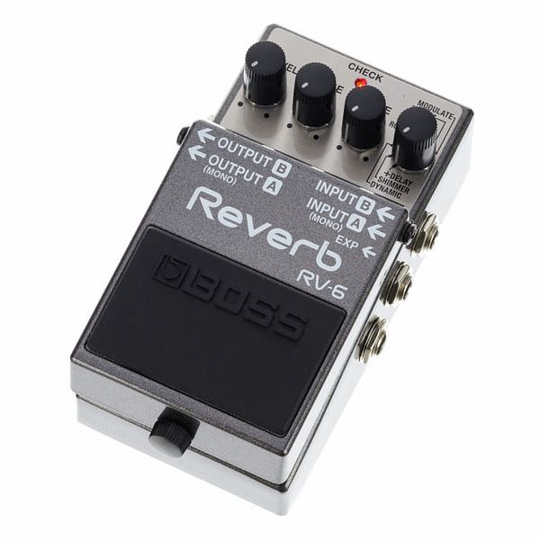
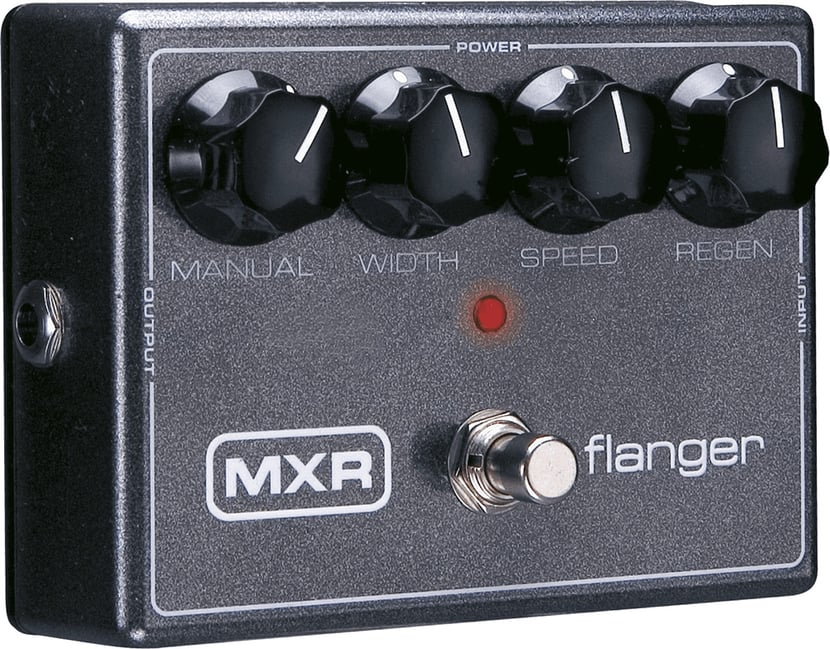
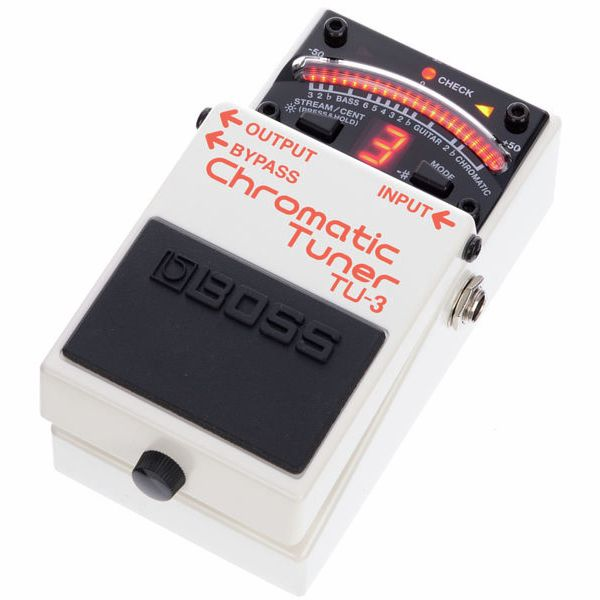

⚡ Pas le temps : le résumé 30 secondes
- Ibanez TS9 — L'overdrive de référence. Chaud, musical, intemporel.
- Dunlop Cry Baby — La wah-wah originale. Le filtre vocal qui ne prend pas de rides.
- Boss DD-3T — Le delay numérique fiable. Simple, propre, pas d'options superflues.
- MXR Dyna Comp — Le compresseur d'entrée de gamme des pros. Invisible mais indispensable.
- Boss TU-3 — L'accordeur de pied. Indestructible. Premier achat obligatoire.
Ton premier achat de pédale d'effets, c'est souvent une catastrophe. Pas parce que la pédale est mauvaise — parce que personne ne t'a expliqué dans quel ordre acheter, pourquoi, et comment les brancher.
Une pédale d'effet, c'est un transformateur de signal. Elle prend le son brut de ta guitare et le sculpte — le compresse, le sature, le retarde, le module. En 2026, l'offre est vertigineuse : des centaines de marques, des milliers de modèles, du clone à 30 euros au boutique à 300. Pour un guitariste qui débute, c'est la paralysie du choix garantie.
Ce guide ne te dit pas quelle est « la meilleure pédale » — ça n'existe pas. Il te donne les 5 types d'effets à connaître en premier, la chaîne de signal à respecter, et les produits concrets qui font consensus pour chaque catégorie. Sans bullshit, sans nostalgie inutile. Juste ce qu'il faut pour monter ton premier rig solide.
Pourquoi les pédales d'effets existent — et depuis quand
Tout commence dans les années 50 avec des accidents heureux : des câbles mal branchés, des amplificateurs à bout de souffle, des transistors défaillants qui saturaient le signal d'une façon que personne n'avait prévue. Ce son accidentel — gras, agressif, imparfait — est devenu l'overdrive, puis la distorsion, puis le fuzz. Les premiers guitaristes à s'en emparer ont compris qu'un son cassé pouvait être plus expressif qu'un son propre.
La première pédale commerciale est le DeArmond Trem-Trol (1948), un trémolo à base d'électrolyte. Mais c'est dans les années 60 que tout s'accélère : le Maestro Fuzz-Tone (1962), immortalisé sur Satisfaction des Rolling Stones, lance l'ère des pédales de distorsion (on raconte cette histoire en détail dans la Guerre des Fuzz). La wah-wah de Vox arrive en 1966, le chorus, le flanger et le delay analogique explosent dans les années 70. Et depuis, l'industrie du gear n'a jamais ralenti.
En 2026, une pédale d'entrée de gamme offre souvent plus de possibilités sonores qu'un studio professionnel des années 80. La question n'est plus « ai-je accès à ce son ? » mais « par où est-ce que je commence ? »
🎵 (I Can't Get No) Satisfaction — Rolling Stones · le fuzz qui a tout changé
🎛️ 5 critères pour choisir une pédale d'effets
🎸 Ton style musical
Blues & rock : overdrive ou fuzz. Funk : wah-wah & compresseur. Post-rock : delay & reverb. Part de là.
🔊 Ton ampli
Un overdrive sonne mieux sur un ampli chaud. Un delay numérique s'adapte à tout. La pédale dépend de l'ampli.
💰 Ton budget
Entrée de gamme (30–80 €) : parfait pour débuter. Ne pas croire qu'il faut dépenser plus pour bien sonner.
🔌 Analogique ou numérique
Analogique = son chaud, organique, réactif. Numérique = plus de possibilités, plus propre, plus pratique en live.
📐 La place dans la chaîne
L'ordre des pédales change tout. Un fuzz avant un buffer sonne différent d'un fuzz après. Toujours tester les deux.
🎸 Les 5 pédales essentielles pour débuter

Ibanez TS9 Tube Screamer
Ibanez
Le Tube Screamer TS9 est sans doute la pédale la plus copiée, clonée et citée de l'histoire. Son secret : il pousse les médiums et compresse légèrement le signal, créant un son chaud et « musical » qui s'insère parfaitement devant un ampli à lampes. Stevie Ray Vaughan en avait deux chaînés. John Mayer ne s'en sépare pas. Et des milliers de guitaristes de blues, de rock et de country en font leur première pédale. Sa magie : il sonne bien à presque tous les réglages.

Dunlop Cry Baby GCB95
Jim Dunlop
La Cry Baby GCB95, c'est la wah-wah originale dans sa forme définitive. Tu poses le pied dessus, tu balances — l'inducteur Fasel jaune crée ce filtre « vowel » incomparable, entre le « wah » grave et l'aigu brillant. C'est une pédale qui se joue avec les jambes autant qu'avec les doigts, et qui nécessite un peu de pratique pour en tirer toute la musicalité. Mais quand tu y arrives, c'est la pédale la plus expressive de tout ton pédalier.

Boss DD-3T
Boss
Le Boss DD-3T est l'évolution moderne du DD-3, l'un des delays numériques les plus vendus de l'histoire. Il ajoute le tap tempo au format classique Boss compact — ce qui change tout en live. De 1 à 800 ms, avec répétitions contrôlables et mode « hold » pour les boucles courtes. Le son numérique est propre, précis, parfait pour le rock et le country. Si tu veux du chaud et de l'analogique, prends l'MXR Carbon Copy. Mais pour commencer, le DD-3T fait tout ce qu'il faut.

MXR Dyna Comp
MXR
Le Dyna Comp MXR est la référence du compresseur de guitare depuis presque 50 ans. Sa simplicité est sa force : deux boutons, « Sensitivity » et « Output », et un circuit CA3080 qui compresse le signal d'une façon distinctivement musicale — pas transparent, mais caractériel. Parfait pour le funk, le country et le « chicken pickin' » du blues. Les guitaristes qui ne l'utilisent pas pensent ne pas avoir besoin d'un compresseur. Ceux qui l'ont essayé ne s'en séparent plus.

Boss TU-3
Boss
Le Boss TU-3, ce n'est pas glamour. Mais c'est LE premier achat à faire avant tout le reste. Précis à un centième de demi-ton, il mute le signal pendant que tu accordes (plus de son qui filtre dans les retours), il résiste à tout — on a vu des TU-3 survivre à des chutes de scène, des tournées en fourgon non chauffé, des déversements de bière. Son seul défaut : son buffer n'est pas totalement transparent — mais en première position dans la chaîne, on ne l'entend pas.
🔌 Dans quel ordre brancher ses pédales ?
L'ordre des pédales dans la chaîne de signal n'est pas une règle absolue — c'est un point de départ. Mais il existe un consensus professionnel qui fonctionne dans 90% des cas :
Cette chaîne n'est pas une règle absolue — c'est un point de départ. Les exceptions font souvent les meilleurs sons. The Edge (U2) place son delay avant sa distorsion. Essaie, écoute, adapte. Pour creuser le sujet, va voir notre article dédié à l'ordre des pédales.